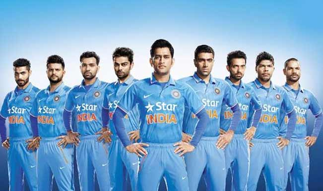

INDIAN CRICKET TEAM

The India national cricket team, also known as Team India and Men in Blue, is governed by the Board of Control for Cricket in India (BCCI), and is a full member of the International Cricket Council (ICC) with Test, One Day International (ODI) and Twenty20 International (T20I) status.
Although cricket was introduced to India by European merchant sailors in the 18th century, and the first cricket club was established in Calcutta (currently known as Kolkata) in 1792, India's national cricket team did not play its first Test match until 25 June 1932 at Lord's, becoming the sixth team to be granted Test cricket status. In its first fifty years of international cricket, India was one of the weaker teams, winning only 35 of the first 196 Test matches it played. From 1932 India had to wait until 1952, almost 20 years for its first Test victory. The team, however, gained strength in the 1970s with the emergence of players such as batsmen Sunil Gavaskar and Gundappa Viswanath, all-rounder Kapil Dev and the Indian spin quartet of Erapalli Prasanna, Srinivas Venkataraghavan, Bhagwat Chandrasekhar and Bishen Singh Bedi.